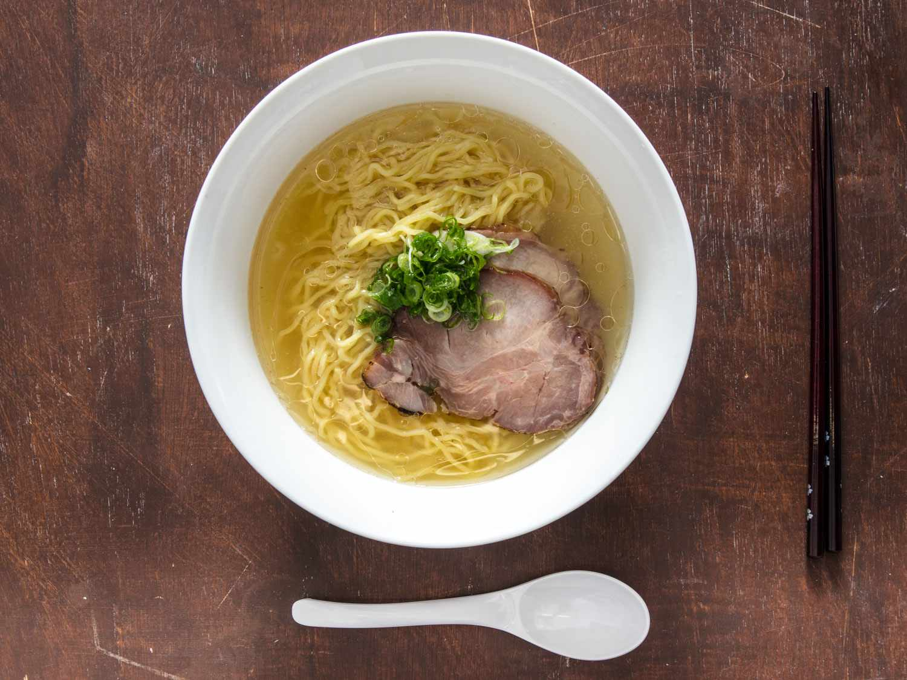

Shio Ramen
「塩ラーメン — The purity of the sea in a crystal-clear broth."
Shio Ramen, originating from Hakodate, is characterized by its clear, transparent broth made with sea salt. It is light, clean and highlights the natural flavors of the ingredients.
Ingredients
- Clear chicken or fish broth
- Japanese sea salt
- Thin noodles
- Nori, scallion and marinated egg
Flavor
Gentle and saline, with natural purity.
Scent
Light, fresh and marine.
Texture
Light and comforting, with a clean mouthfeel.